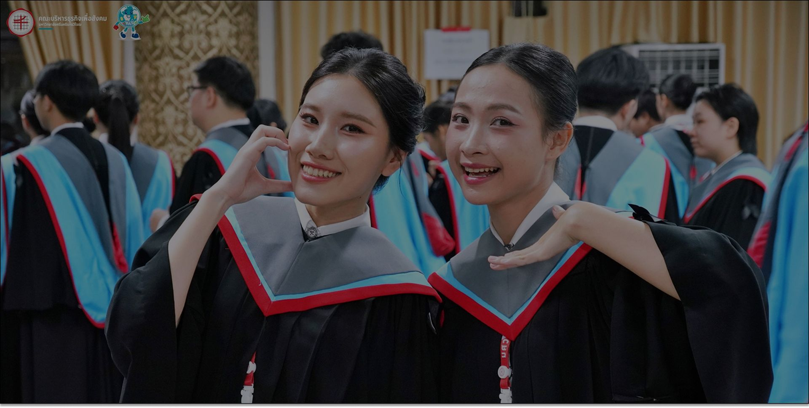
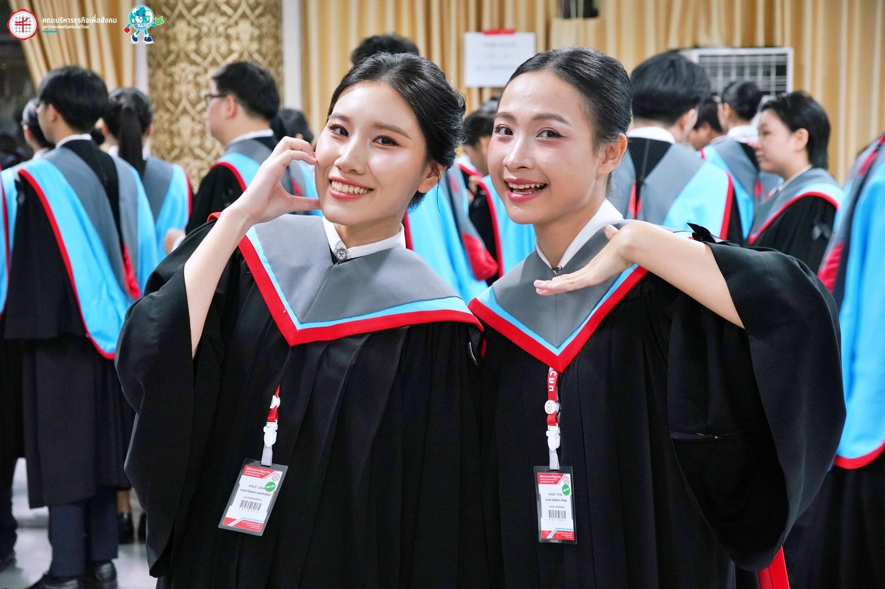
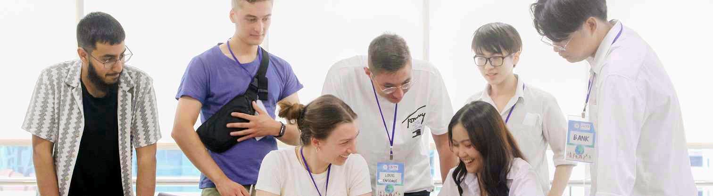
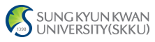
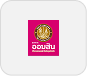

คณะบริหารธุรกิจเพื่อสังคม
มหาวิทยาลัยศรีนครินทรวิโรฒ
องค์กรชั้นนำแห่งการเรียนรู้ธุรกิจที่มีคุณค่าเพื่อความยั่งยืนของสังคม
อัตลักษณ์คณะ
B · A · SBusiness Administration for Society
กรอบแนวคิดสามด้านที่กำหนดวิธีการเรียนการสอน การทำงาน และการวัดความสำเร็จของคณะ
Academic
ค้นหาเส้นทางการศึกษาที่เหมาะกับคุณ ที่คณะบริหารธุรกิจเพื่อสังคม มศว
การรับสมัคร
Admission
ข้อมูลการสมัครเข้าศึกษา คุณสมบัติ และขั้นตอนการสมัคร
ปริญญาตรี
Undergraduate Programme
หลักสูตรระดับปริญญาตรีทั้งภาษาไทยและภาษาอังกฤษ
บัณฑิตศึกษา
Graduate Programme
หลักสูตรปริญญาโทและปริญญาเอก เพื่อความเชี่ยวชาญเฉพาะทาง
โอกาสระดับนานาชาติ
International Opportunities
หลักสูตรนานาชาติ โครงการแลกเปลี่ยน และปริญญาคู่ 3+1

รู้จักเรา
รู้จักคณะบริหารธุรกิจเพื่อสังคม
ก่อตั้งขึ้นเป็นคณะอิสระของมหาวิทยาลัยศรีนครินทรวิโรฒ คณะบริหารธุรกิจเพื่อสังคมรวมสามภาควิชาเข้าด้วยกัน ได้แก่ ภาควิชาการบัญชีและการเงิน ภาควิชาการตลาดและการจัดการ และภาควิชาบริหารธุรกิจ ภายใต้แนวคิดเดียวกันคือ การศึกษาด้านบริหารธุรกิจที่วัดความสำเร็จจากผลกระทบต่อสังคม ไม่ใช่แค่ตัวเลขในงบการเงิน
ปัจจุบันคณะมีนิสิต 3,776 คนในทุกระดับตั้งแต่ปริญญาตรีถึงปริญญาเอก มีอาจารย์ประจำ 38 คน นำโดยคณบดี ดร.ณัฐินี ฐานะจาโร
อ่านเพิ่มเติมเกี่ยวกับ BAS SWU3,776
นิสิตทั้งหมดTotal students
3,420
ระดับปริญญาตรีBachelor's degree
339
ระดับปริญญาโทMaster's degree
17
ระดับปริญญาเอกDoctoral
38
อาจารย์ประจำFaculty members
9
หลักสูตรDegree programs
จุดเด่น
ทำไมต้อง BAS SWUWhy BAS SWU
3 ภาควิชา 9 เส้นทางอาชีพ
การบัญชีและการเงิน การตลาดและการจัดการ และบริหารธุรกิจ — ตั้งแต่ปริญญาตรีถึงปริญญาเอก ภายใต้คณะเดียวที่สร้างธุรกิจควบคู่จิตสำนึกต่อสังคม
เส้นทางสู่สากลอย่างแท้จริง
หลักสูตรการจัดการธุรกิจโลกสอนเป็นภาษาอังกฤษทั้งหมด มีพันธมิตรแลกเปลี่ยนที่เยอรมนีและฟิลิปปินส์ พร้อมทางเลือกปริญญาคู่ 3+1
คณาจารย์ที่เข้าถึงได้จริง
อาจารย์ประจำ 38 คนใน 3 ภาควิชา พร้อมรายชื่อหัวหน้าภาควิชา รองคณบดี และผู้ช่วยคณบดี ที่เปิดเผยและติดต่อได้ทางอีเมล
ชีวิตนิสิต
ชีวิตนิสิตStudent Life
เรียนรู้ เชื่อมโยง และเติบโต — ชีวิตนิสิต BAS SWU นอกห้องเรียน
เรียนรู้
เรียนรู้จากการลงมือทำ ไม่ใช่แค่ฟังบรรยาย
การแข่งขันเคส โปรเจกต์กับลูกค้าจริง และแล็บประจำภาควิชา ทำให้ทฤษฎีถูกนำมาใช้จริงตั้งแต่ปีหนึ่ง ครบทั้งสามภาควิชา
สำรวจชีวิตนิสิตเชื่อมโยง
แคมปัสที่สร้างขึ้นจากความเป็นชุมชน
ชมรม สโมสรนิสิต และกิจกรรมข้ามภาควิชา เปิดพื้นที่ให้นิสิตทุกคนได้เป็นผู้นำ ไม่ใช่แค่ผู้เข้าร่วม
ดูกิจกรรมนิสิตเติบโต

โลกที่กว้างกว่าห้องเรียน
พันธมิตรแลกเปลี่ยนที่เยอรมนีและฟิลิปปินส์ พร้อมเส้นทางปริญญาคู่ 3+1 สำหรับนิสิตหลักสูตรการจัดการธุรกิจโลก
โอกาสแลกเปลี่ยน & ต่างประเทศกิจกรรม
กิจกรรมและชีวิตนิสิตActivities & Student Life
กิจกรรมนิสิตการแข่งขันเคสและโปรเจกต์ประยุกต์
นิสิตจากทั้งสามภาควิชานำทฤษฎีไปใช้กับโจทย์ธุรกิจจริง การแข่งขันแผนธุรกิจ และแล็บประจำภาควิชา
อ่านเพิ่มเติมกิจกรรมนิสิตชมรมและสโมสรนิสิต
องค์กรที่บริหารโดยนิสิตเปิดพื้นที่ให้ทุกคนได้เป็นผู้นำ — ตั้งแต่การจัดงานอีเวนต์ไปจนถึงการเป็นพี่เลี้ยงรุ่นน้อง
อ่านเพิ่มเติม กิจกรรมนิสิตสิ่งอำนวยความสะดวก
กิจกรรมนิสิตสิ่งอำนวยความสะดวกชีวิตในและรอบแคมปัส
จากพื้นที่ทำงานร่วมกันในอาคารนวัตกรรม ไปจนถึงย่านสุขุมวิทโดยรอบ ชีวิตแคมปัสขยายไกลกว่าประตูห้องเรียน
อ่านเพิ่มเติมโอกาสแลกเปลี่ยนที่ประเทศเยอรมนี
พันธมิตรแลกเปลี่ยนที่สนับสนุนการศึกษาหนึ่งภาคการศึกษาในประเทศเยอรมนี
อ่านเพิ่มเติมFrankfurt School of Finance & Management
โครงการแลกเปลี่ยนเฉพาะกับ Frankfurt School of Finance & Management ประเทศเยอรมนี
อ่านเพิ่มเติม
ความร่วมมือBrokenshire College ประเทศฟิลิปปินส์
บันทึกข้อตกลงความร่วมมือระหว่าง มศว และ Brokenshire College สนับสนุนความร่วมมือและการแลกเปลี่ยน
อ่านเพิ่มเติมข่าวและกิจกรรม
ข่าวและกิจกรรมNews & Events

ข่าวเด่น
ความร่วมมือทางวิชาการและเยี่ยมชมคณะ: ต้อนรับมหาวิทยาลัยยอร์ก
BAS SWU ต้อนรับคณะผู้แทนจากมหาวิทยาลัยยอร์ก (University of York) เพื่อหารือความร่วมมือทางวิชาการและเยี่ยมชมคณะ
วิชาการและวิจัย
บรรยายพิเศษ Cross-Cultural Branding
ความร่วมมือและนานาชาติ
พิธีลงนาม MOU กับ Brokenshire College ประเทศฟิลิปปินส์
ความร่วมมือและนานาชาติ
โอกาสแลกเปลี่ยนที่ประเทศเยอรมนี
ความร่วมมือและนานาชาติ
โครงการแลกเปลี่ยน Frankfurt School of Finance & Management
ก้าวต่อไปของคุณ
พร้อมเริ่มต้นที่ BAS SWU แล้วหรือยัง
ดูหลักสูตร เกณฑ์การรับสมัคร และช่องทางติดต่ออาจารย์ที่ปรึกษาของแต่ละหลักสูตรได้ในที่เดียว
เครือข่ายความร่วมมือ
หน่วยงาน สถาบันการศึกษา และองค์กรพันธมิตรที่คณะลงนามความร่วมมือ (MOU) รวมถึงองค์กรที่บัณฑิตของเราทำงานด้วย






Global Partnerships
Global Partnerships23 partner organisations · 6 countries · 2 regions
Our international collaborations and academic partnerships around the world.
- North America0no partnership on record
- South America0no partnership on record
- Europe22 countries
- Asia214 countries
- Australia & New Zealand0no partnership on record
- Africa0no partnership on record
Markers show the number of partner organisations in each country. Use Tab and Enter to move between markers; on small screens, swipe the map sideways.